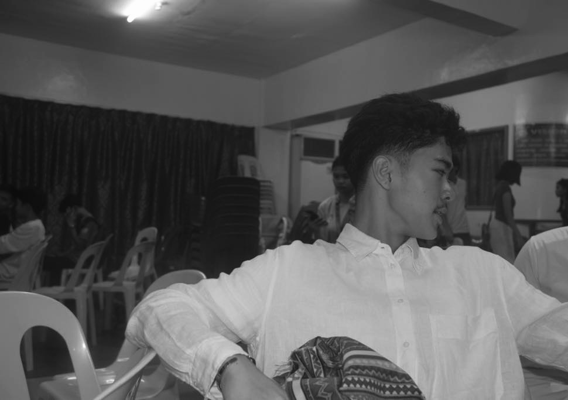

Hi! I am Jomycko Axel Go, a first-year Bachelor of Science in Information Technology at The College of Maasin, currently learning the fundamentals of HTML, CSS, and JavaScript, I like experimenting with different styles and concepts, whether it’s building responsive layouts or designing pages inspired by themes like motorsport and modern UI. Each project I create helps me develop my skills and pushes me to learn something new. My goal is to become a skilled developer who can build efficient, high-quality websites and eventually expand into more advanced technologies.

Email: j.axelgo24@gmail.com